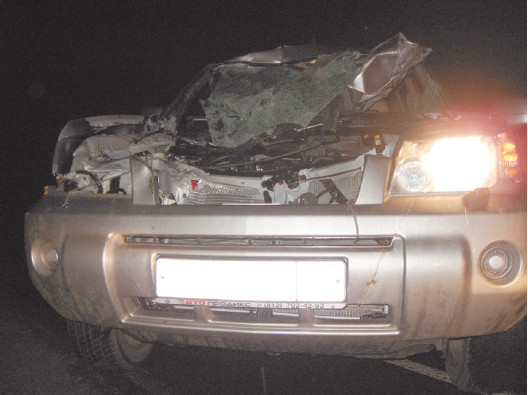
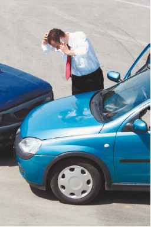
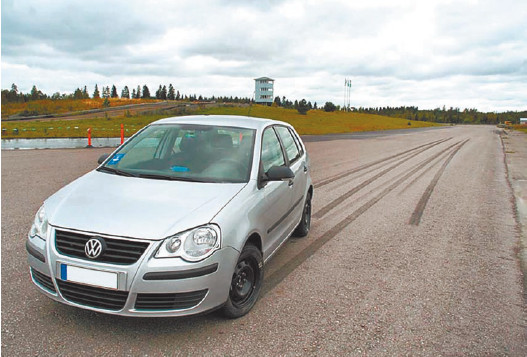

Как оформлять ДТП
К сожалению, от дорожно-транспортного происшествия застраховаться невозможно. На дороге частенько действует «правило бутерброда», которое формулируется неутешительно: не ты, так тебя. Поэтому к неприятностям следует быть готовым и встречать их во всеоружии (рис. 5.1).

Рис. 5.1. Если произошло ДТП, не забудьте отключить электрооборудование – в разбитом автомобиле возможны короткое замыкание и пожар
Неопытных водителей особенно шокирует ситуация, когда они в ДТП совершенно невиновны, а причиной аварии является какой-либо лихач. Но если этот лихач юридически подкован, то он может сделать из новичка козла отпущения, полностью переложив на него всю ответственность за ДТП. Поэтому первое, что следует сделать, если все-таки неприятность произошла, – отложить на потом панику. Вы должны быть максимально спокойны и собранны (рис. 5.2).

Рис. 5.2. В случае ДТП лишние эмоции ни к чему
Малоопытные водители обычно теряются в случае ДТП до состояния шока, позволяя другому водителю (часто – истинному виновнику аварии) изложить прибывшему на место происшествия наряду ГИБДД обстоятельства так, как это выгодно ему. А растерявшийся новичок подписывает протокол, практически не читая.
Следует знать, что, если водитель на месте ДТП подписал протокол, в котором сказано, что он является виновником аварии, впоследствии это будет очень сложно опровергнуть.
Совет
Если вы не в состоянии адекватно оценивать происходящее, напуганы и растеряны или пребываете в шоке, а вас обвиняют в совершении ДТП, но вы не уверены в своей виновности, пишите в протоколе «Не согласен» или «Виновным себя не признаю» и смело расписывайтесь. В этом случае истинная картина произошедшего будет восстанавливаться на рассмотрении дела об административном правонарушении, куда будут приглашены все заинтересованные стороны, а также свидетели ДТП.
Не забудьте, что все обстоятельства ДТП должны быть четко и конкретно зафиксированы – это будет играть решающую роль при дальнейшем разбирательстве и установлении виновных.
Если в результате ДТП никто из его участников не получил тяжких телесных повреждений, то на месте аварии следует оформить такие документы.
? Подробную схему дорожно-транспортного происшествия, подписанную его участниками.
? Описание всех повреждений автомобилей, попавших в аварию.
Примечание
Описание должно составляться максимально подробно. К примеру, не следует писать просто «автомобиль разбит сзади», лучше указать «помят багажник, полностью разбит задний левый фонарь, бампер развалился на части, задняя панель помята с надрывом металла» и т. п.
? Объяснения участников дорожно-транспортного происшествия, а также его свидетелей.
Примечание
Вы можете вписать в качестве свидетелей пассажиров своего автомобиля, даже если этого не сделал по какой-либо причине инспектор ГИБДД.
? Извещение о дорожно-транспортном происшествии.
? Протокол об административном правонарушении. Копии протокола в обязательном порядке сразу после его составления должны вручаться каждому участнику ДТП.
Если же авария повлекла за собой серьезные последствия (увечья или гибель людей, значительный материальный ущерб и т. п.), то необходимо оформить следующие документы.
? Справку о дорожно-транспортном происшествии.
? Подробную схему аварии, выполненную на миллиметровой бумаге.
? Протокол осмотра и проверки технического состояния транспортных средств.
? Акт медицинского освидетельствования на состояние опьянения каждого участника аварии.
Совет
Ни в коем случае не отказывайтесь от медицинского освидетельствования на состояние опьянения, иначе вы автоматически будете признаны виновным при дальнейшем разбирательстве происшествия.
? Показания свидетелей, подробные объяснения участников ДТП.
? Извещение о дорожно-транспортном происшествии.
Кроме показаний свидетелей, все остальные документы должны оформляться в присутствии участников ДТП и при их непосредственном участии.
Совет
Чтобы чувствовать себя увереннее в такой непростой ситуации, позвоните и попросите приехать друга или родственника (желательно – опытного водителя), который поможет сориентироваться и предотвратит неосмотрительные действия с вашей стороны, а также проконтролирует правильность оформления ДТП.
При оформлении дорожно-транспортного происшествия настоятельно рекомендуется обратить внимание на перечисленные ниже моменты и, если они имеют место, обязательно отразить их в протоколе.
? Наличие следов тормозного пути, если таковой был (рис. 5.3), а также иных следов ДТП в районе аварии, как-то: фрагменты либо части автомобиля, лежащие на месте аварии, выброшенные из багажника или салона предметы и т. д.
? Если дорога идет под уклон, это также рекомендуется отразить в протоколе.
? Место дорожно-транспортного происшествия: возможно, ДТП произошло в низине, в которой во время аварии был туман, или на участке дороги, который плохо просматривался по каким-то другим причинам.
? Состояние дороги: например, если на дорожном покрытии имеются какие-либо дефекты (ямы, выбоины, трещины и т. п.), то следует замерить их длину, глубину, ширину и зафиксировать результаты в протоколе. Если размеры дефектов превышают предельно допустимую величину (согласно ГОСТ Р 50597-93), то ответственность за аварию может быть полностью либо частично возложена на дорожные службы.
? Наличие луж, льда, грязи и подобных образований в районе аварии, причем желательно с указанием их точных размеров.
? Наличие и состояние дорожного оборудования, а также технических средств и приспособлений организации дорожного движения: светофоров, дорожной разметки, знаков и т. д., а также порядок их расположения и параметры. Не исключено, что ДТП произошло, к примеру, из-за неисправного светофора. Если какой-то дорожный знак либо линия не соответствуют законодательно установленному виду (например, неправильное цветовое оформление), то в данном случае ответственность за ДТП можно разделить с дорожной службой, которая установила этот знак или нанесла разметку, и автоинспекцией, которая должна контролировать состояние техсредств организации дорожного движения.

Рис. 5.3. Черные полосы на дороге как результат резкого торможения
Лучше всего сделать не только описание, но и подробные (и многочисленные) фотографии хотя бы с помощью фотоаппарата мобильного телефона. Следует фотографировать все, что так или иначе имеет отношение к аварии (место ДТП, расположение на дороге транспортных средств его участников и т. д.).
В соответствии с действующим законодательством каждый участник ДТП имеет право потребовать выполнения дополнительных мероприятий, которые могли бы помочь в воссоздании картины аварии. Например, контрольное торможение автомобилей, определение видимости на дороге и т. д.
Не забывайте, что виновник ДТП часто определяется на основании свидетельских показаний. Но не все водители знают, что свидетелями могут являться любые граждане, которые были очевидцами ДТП, в том числе близкие, знакомые и родные участников аварии.
Если авария не очень серьезная (например, машины немного задели друг друга, в результате чего лишь треснул фонарь и поцарапался бампер), то ее участники могут не вызывать на место автоинспекцию, а разобраться самостоятельно на месте – это официально разрешено действующим законодательством. В данном случае участники аварии должны сами определить, кто является виновником ДТП и будет возмещать убытки пострадавшей стороне, составить схему ДТП (в двух экземплярах для каждой из сторон) и направиться на ближайший пост ДПС.
Подобная безобидная ситуация может в дальнейшем обернуться серьезными неприятностями для виновника аварии, а иногда – и для пострадавшей стороны. Такие последствия возникают, если:
? виновник аварии не взял расписку от другого участника ДТП в том, что тот не имеет к нему претензий;
? другой участник аварии – человек непорядочный.
Примерный текст расписки выглядит следующим образом:
Я, Невезучий Иван Петрович, проживающий по адресу: г. Москва, ул. Тверская, д. 25, кв. 7,15 августа 2009 года стал участником ДТП по вине другого водителя – Лихача Андрея Семеновича, проживающего по адресу: г. Москва, ул. Арбат, д. 10, кв. 5. ДТП случилось в 14:55 в Москве на пересечении улиц Ленина и Сталина. Я управлял собственным автомобилем марки «Запорожец», госномер 3525, а Лихач Андрей Семенович – собственным автомобилем марки «Москвич-407», госномер 5252.
У моей машины «Запорожец» в результате ДТП разбит задний фонарь и перестал работать климат-контроль, у машины Лихача А. С., «Москвич-407», помят передний бампер и вышла из строя система АБС. По обоюдному согласию в совершении ДТП виновным признается Лихач Андрей Семенович, который полностью возместил мне причиненный ущерб в размере 25 000 (двадцать пять тысяч) российских рублей.
В связи с этим никаких материальных и иных претензий к Лихачу Андрею Семеновичу я не имею, в чем и расписываюсь.
Дата и подпись
Расписка обязательно должна включать в себя следующие данные:
? фамилию, имя, отчество (полностью) участников ДТП;
? адреса проживания участников ДТП, а если адрес прописки и адрес проживания разные, то необходимо указать оба;
? точное время, место и дату аварии;
? марки, модели и регистрационные номера автомобилей;
? описание повреждений, причиненных автомобилю пострадавшего;
? сумму возмещенного ущерба (цифрами и прописью);
Внимание
Сумму следует указывать только в российских рублях, вне зависимости от того, в какой валюте производился расчет.
? фразу о том, что потерпевший не имеет никаких материальных и иных претензий к виновнику ДТП;
? дату составления расписки и личную подпись пострадавшего.
Случается, что при отсутствии расписки пострадавший вызывает наряд ГИБДД на место происшествия, стоит только виновному водителю уехать. Иногда бывает, что наряд вызывает виновник ДТП, а инспектору ГИБДД он представляется пострадавшим. При этом в его пользу говорит то, что он вызвал наряд, а вот второй участник ДТП скрылся с места происшествия! Далее ГИБДД быстро находит второго водителя и его автомобиль со следами недавней аварии (тот, кто вызывает ГИБДД, услужливо сообщает марку и регистрационный номер автомобиля «виновника»). И тому, кто уехал, считая, что ситуация полностью и благополучно разрешена, приходится отвечать уже не только за ДТП, но и за то, что он скрылся с места происшествия.
Совет
Если вы столкнулись с такой ситуацией и вас пытаются сделать виновным за проступок, который вы не совершали, то в протоколе не признавайте себя виновным (пишите «Виновным себя не признаю» и подписывайтесь). Кроме того, найдите свидетелей, которые могли бы подтвердить факт передачи денег пострадавшему в качестве возмещения ущерба (или факт виновности в ДТП другой стороны) Помните, что этими свидетелями могут быть ваши родственники, друзья и знакомые В самом деле, почему бы кому-либо из них случайно не пройти мимо как раз в нужный момент?